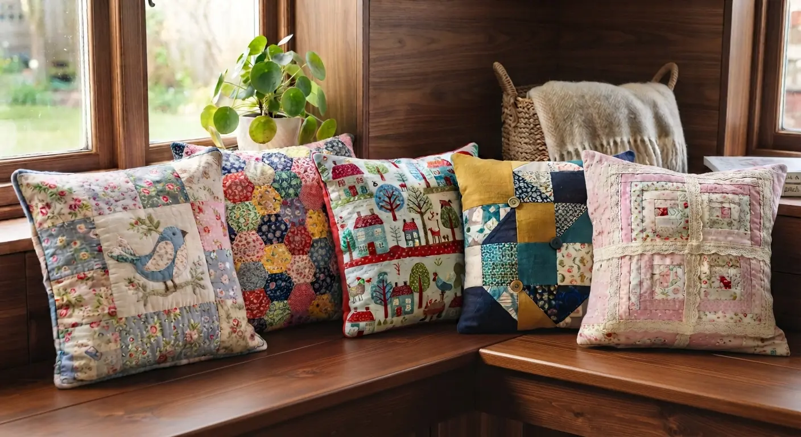
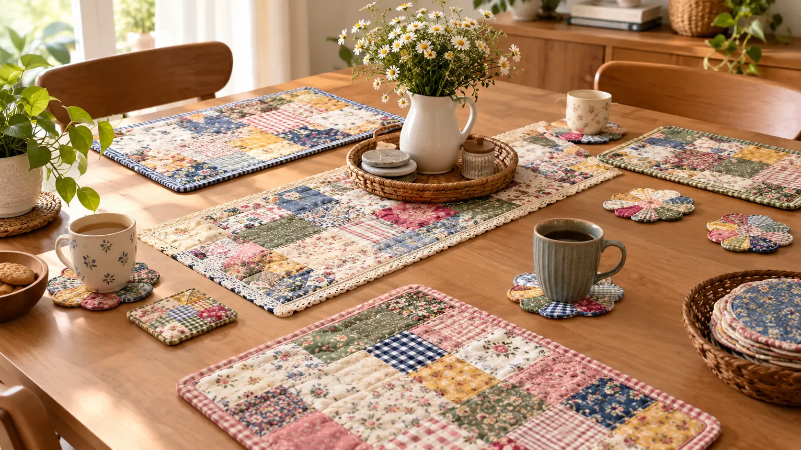
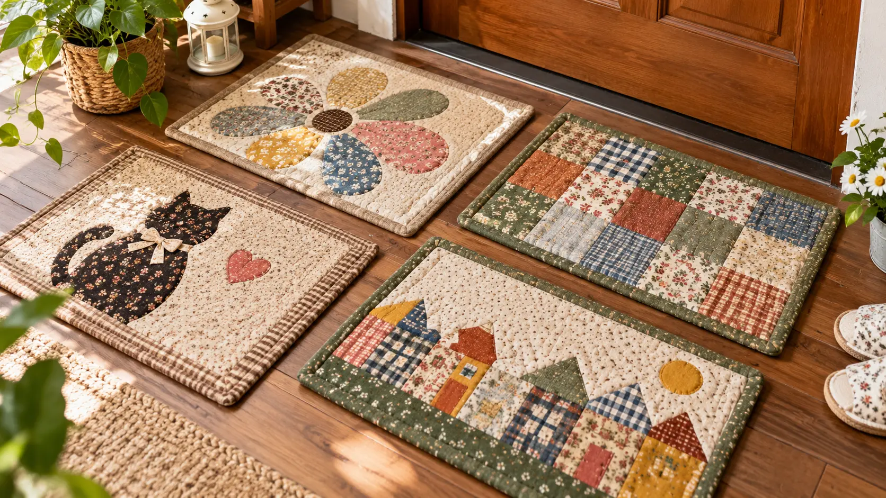
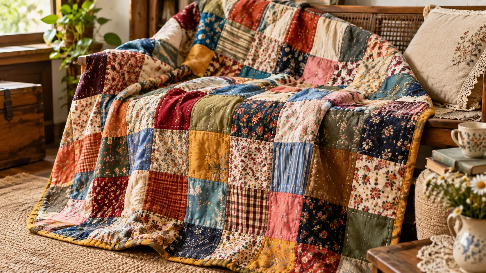
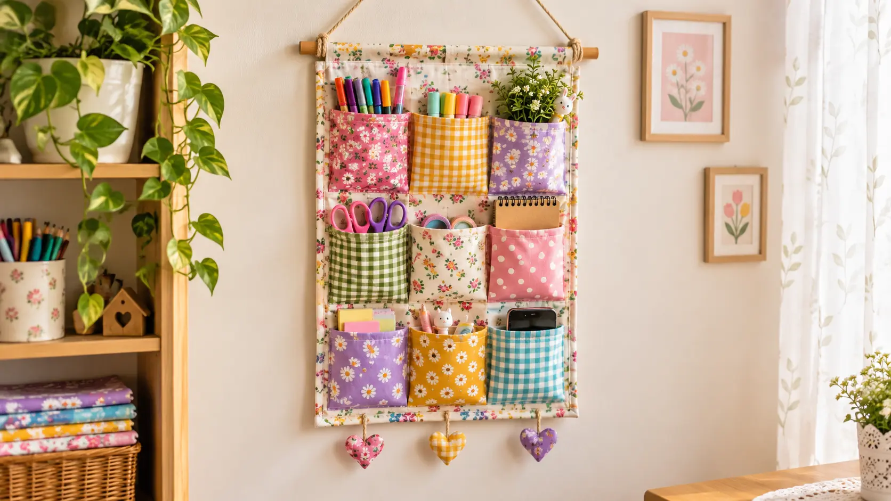
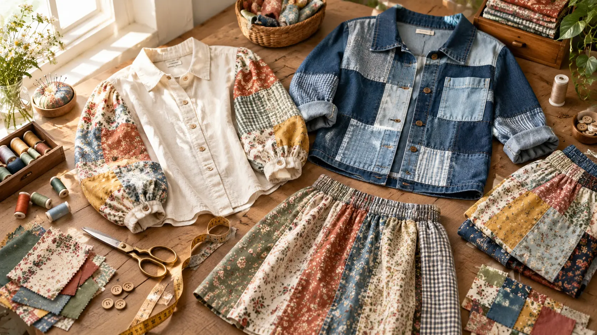
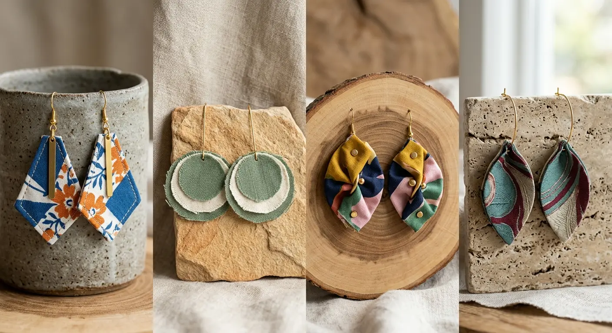
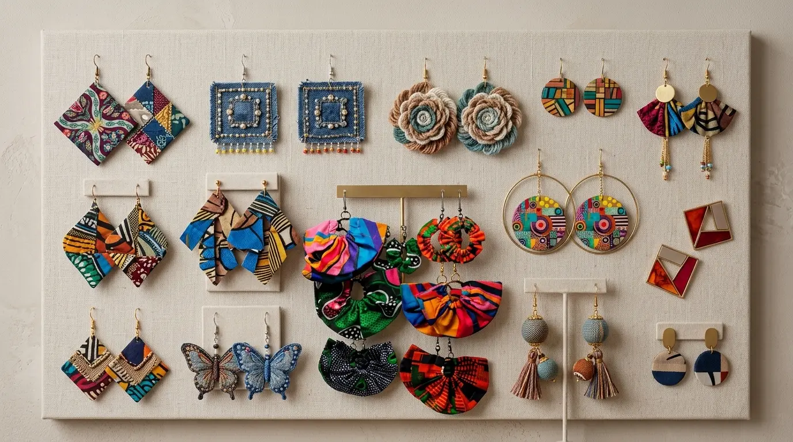
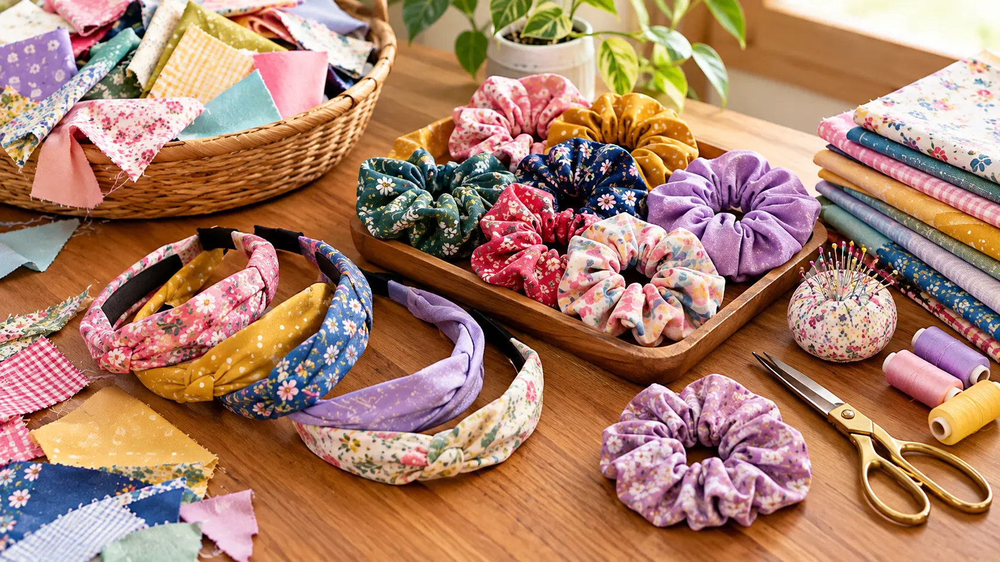
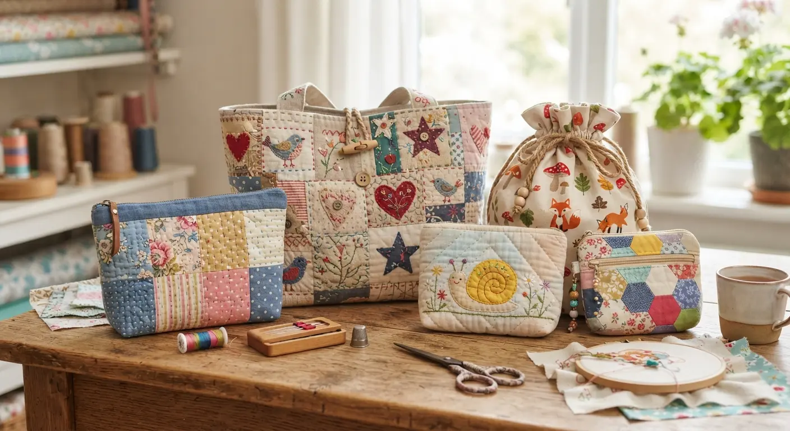

මැහුම් කටයුතුවල නියැලෙන අප සැම දෙනාටම පොදු අත්දැකීමක් නම්, ඇඳුමක් හෝ නිර්මාණයක් මසා අවසන් කළ පසු කුඩා රෙදි කැබලි, වර්ණවත් රෙදි කොටස් සහ විවිධ හැඩයේ රෙදි කැබලි එකතු වීමයි. මේවා දෙස බලා "මේකෙන් මොනවා කරන්නද?" කියා සිතමින් බොහෝ දෙනෙක් ඒවා ඉවත දැමීමට පුරුදු වී සිටිති. නමුත් ටිකක් කල්පනා කර බැලුවහොත්, මේ කුඩා රෙදි කැබලි යනු ඔබේ නිර්මාණශීලීත්වය මුදාහැරීමට ඇති කදිම අවස්ථාවකි. කුණු කූඩයට යන රෙදි කැබලි ටිකකින් ඔබේ නිවසට මෙන්ම පෞද්ගලික විලාසිතාවන්ට අලංකාරයක් සහ අපූර්වත්වයක් ගෙන එන්නේ කෙසේදැයි අද අපි විස්තරාත්මකව කතා කරමු.
රෙදි කැබලි එකතු කර කරනු ලබන නිර්මාණ (පැච්වර්ක්-Patchwork) හුදෙක් අපද්රව්ය අවම කිරීමක් පමණක් නොවේ; එය ඔබේ නිවසට සහ ඇඳුම් පැළඳුම්වලට ස්වභාවික, ආදරණීය පෙනුමක් එක් කරන අපූරු කලා ක්රමයකි. මෙමඟින් පරිසර හිතකාමී ජීවන රටාවකට හුරුවීමත් සමඟම, මුදල් ඉතිරි කරගනිමින් නිවසට අවශ්ය අලංකාර භාණ්ඩ මෙන්ම විලාසිතා උපාංග ඔබගේම අතින් නිමවා ගැනීමේ ආශ්වාදය ලබාගත හැකිය. ඔබගේ ඉතිරි වන රෙදි කැබලි එකතුව නිසි ලෙස ප්රයෝජනයට ගනිමින් ඔබේ දක්ෂතා ඔප්නංවාගත හැකි අපූරු අදහස් රැසක් පහත පරිදි විමසා බලමු.

ඔබේ විසිත්ත කාමරයේ සෝෆාවට හෝ නිදන කාමරයේ ඇඳට නව පෙනුමක් ලබා දීමට, ඉතිරි වූ විවිධ වර්ණවලින් යුත් රෙදි කැබලි එකතු කර අලංකාර කුෂන් කවර මසාගන්න.
- විවිධ වර්ණ සහ හැඩවලට කපාගත් රෙදි කැබලි එකතු කර, ෂඩාස්ර හැඩයට හෝ විවිධ ජ්යාමිතික මෝස්තරවලට මේවා මසාගත හැකිය.
- මේවාට තවත් වැඩිපුර අලංකාරයක් එක් කිරීමට කුඩා බොත්තම්, ලේස් පටි, රිබන් හෝ මැහුම් රටා එකතු කිරීමෙන් නිවසට වඩාත් ආකර්ෂණීය හා කලාත්මක පෙනුමක් ලබා දිය හැකිය.

කෑම මේසයට අපූරු සාම්ප්රදායික මෙන්ම නවීන මිශ්ර පෙනුමක් ගෙන ඒමට ඉතිරි රෙදි කැබලිවලින් කරනු ලබන නිර්මාණ මසාගන්න. මේවා මඟින් උණුසුම් කෝප්පවලින් මේසයට වන හානිය වළකන අතරම, කෑම මේසය අලංකාරය කරයි.
- එකිනෙකට ගැලපෙන පාට පාට රෙදි කොටස් එකතු කර හතරස් හැඩයට, ත්රිකෝණාකාර හෝ රවුම් හැඩයට මේවා මසා ගත හැකිය.

නිවසේ දොරටු අසලට, නාන කාමරයට හෝ නිදන කාමරවලට දමන පාපිසි සඳහා වෙළඳපොලෙන් මිලදී ගන්නා පාපිසි භාවිත කරනවා වෙනුවට, ඔබේ ඉතිරි රෙදි කැබලි එකතු කර කල් පවතින අලංකාර පාපිසියක් මසාගන්න.
- පැරණි ඩෙනිම් රෙදි කැබලි හෝ ඝනකම් කපු රෙදි කැබලි එකිනෙකට ජ්යාමිතික ක්රමවලට හෝ පෙළ ගැස්වූ රටාවලට මැසීමෙන් ඉතා ශක්තිමත් සහ සුවපහසු පාපිසි නිර්මාණය කළ හැකිය.

නිදන කාමරයට ඉතිරි වූ විවිධ රෙදි කැබලි එකතු කර විශාල ඇඳ ඇතිරිලි හෝ උණුසුම් බ්ලැන්කට් මසාගන්න.
- විවිධ ප්රමාණයේ, වර්ණවල සහ මෝස්තරවල රෙදි කැබලි එකිනෙකට ඉතා කලාත්මකව අමුණා සාදාගන්නා මෙම බ්ලැන්කට් මඟින් නිවසට අමතර උණුසුමක් මෙන්ම කලාත්මක පෙනුමක් ගෙන දෙයි.

කාමරය පිරිසිදුව, පිළිවෙළට තබා ගැනීමටත්, කුඩා ද්රව්ය පහසුවෙන් ළඟ තබා ගැනීමටත් රෙදි කැබලි එකතු කර කරනු ලබන මෙවැනි නිර්මාණ භාවිතා කල හැක. මේවා ඔබේ මේසය මත ඇති අවුල්සහගත බව මගහරවා ගැනීමට මහත්සේ උපකාරී වේ.
- ඝනකම් කපු රෙද්දක් පසුබිම ලෙස ගෙන, ඉතිරි වූ විවිධ වර්ණවත් රෙදි කැබලිවලින් විවිධ ප්රමාණයේ ලස්සන සාක්කු මසා ඊට ආරක්ෂිතව අමුණාගන්න.
- මේවායේ මැහුම් කටයුතුවලට අවශ්ය කතුරු, නූල් බෝල, කණ්ණාඩි, පෑන් මෙන්ම කුඩා පැල වර්ග හෝ වියළි මල් අලංකාර ලෙස රඳවා තබා ගනිමින් බිත්තියට අපූරු පෙනුමක් එකතු කළ හැකිය.

නිවසේ ජනෙල්වලට රෙදි කැබලි එකතු කර වර්ණවත් තිර රෙදි මසාගත හැකිය. මෙය අමුත්තන්ගේ සිත බැඳගන්නා කලාත්මක අංගයකි.
- විවිධ වර්ණ හා රටා ඇති රෙදි කැබලි එකිනෙකට ගැලපෙන අයුරින් අසා සාදාගන්නා මෙම තිර රෙදි මඟින් නිවසට සුවිශේෂී පෙනුමක් එකතු කරයි.
- වෙළඳපොලෙන් මිලදී ගැනීමට නොහැකි, ඔබේ නිවසටම අනන්ය වූ නිර්මාණයක් ලෙස මෙය සකසා ගත හැකිය.

රෙදි කැබලි යනු නිවසට පමණක් සීමා වූ දෙයක් නොවේ; ඔබේ දෛනික ඇඳුම් පැළඳුම්වලටද අලුත් විලාසිතාමය පෙනුමක් ලබා දීමට මේවා යොදාගත හැකිය. ඔබේ පෞද්ගලික විලාසිතාව මෙමගින් තවත් ඉහළ නංවාගත හැක.
- සාමාන්ය කමිසයක අත්වලට හෝ සායට වෙනස් වර්ණවත් රෙදි කැබලි අමුණා අලංකාර පැච්වර්ක් කමිස හෝ ජැකට් මසාගන්න.
- මෙමඟින් ඔබේ ඇඳුම් එකතුවට සම්පූර්ණයෙන්ම වෙනස්ම ලස්සනක් සහ නවීන පෙනුමක් එක්කර ගත හැකිය.



ඉතිරි වන ඉතා කුඩා රෙදි කැබලි පවා කිසිසේත් අපතේ නොයවා, ඔබේ දෛනික විලාසිතා තවත් ඔප්නංවා ගන්නා අපූරු ආභරණ නිර්මාණය කරගන්න. මේවා ඉතා ඉක්මනින් හා අඩු වියදමින් නිමවාගත හැකි ආකර්ෂණීය අංග වේ.
- රෙදි පටි හෝ මල් හැඩයට මසා සකස් කරගත් අලංකාර කරාබු , මාල සහ වළලු මෙන්ම හිස සරසා ගන්නා ස්ක්රන්චි (Scrunchies), පහසුවෙන් සාදාගත හැකිය.
- මෙම නිර්මාණ මඟින් ඔබ අඳින ඇඳුමට ගැළපෙන අලංකාර පෙනුමක් ලබා දේ.

ගමන් බිමන් යෑමට හෝ දෛනික භාවිතයට අවශ්ය විලාසිතාමය බෑග් වර්ග පහසුවෙන් නිපදවාගත හැකිය. මේවා පරිසර හිතකාමී මෙන්ම ඉතා ප්රයෝජනවත් දෛනික උපාංග වේ.
- බෑගයේ ඇතුළට ඝනකම් ලයිනිං රෙද්දක් යොදා මැසීමෙන් මේවා ඉතා ශක්තිමත්ව දිගු කලක් පාවිච්චි කළ හැකි ආකාරයට සකස් කරගත හැකිය.
ඔබේ ළඟ ඉතිරි වී ඇති රෙදි කැබලි එකතුවෙන්, මෙම විස්තරාත්මක අදහස් අතරින් මුල්ම ව්යාපෘතිය ලෙස ඔබ නිර්මාණය කිරීමට බලාපොරොත්තු වන්නේ කුමක්ද?
💡 කුඩා පරිමාණයෙන් ආරම්භ කරන්න
මුලදී විශාල අභියෝග භාර නොගෙන, කුඩා කුෂන් කවරයකින් ඔබේ නිර්මාණශීලී ගමන ආරම්භ කරන්න.
🎨 වර්ණ සංයෝජනය ප්රගුණ කරන්න
විවිධ රෙදි කැබලි එකතු කරන විට එකිනෙකට ගැළපෙන වර්ණ සහ රටා තෝරා ගැනීමෙන් ඔබේ නිර්මාණය වඩාත් ආකර්ෂණීය වේ.
💡 විශේෂ උපදෙස්
කල්පැවැත්ම වැඩි කරගැනීම
භාවිත කරන රෙදි කැබලි හොඳින් මැද (Iron කර) ගැනීමෙන් පසු නිර්මාණ කටයුතු ආරම්භ කරන්න.
නිර්මාණශීලී අලංකරණය
අසාමාන්ය බොත්තම්, ලේස් හෝ එම්බ්රොයිඩර් මැහුම් එකතු කිරීමෙන් සාමාන්ය නිර්මාණයකට වුවද සුවිශේෂී පෙනුමක් ලබා දිය හැකිය.